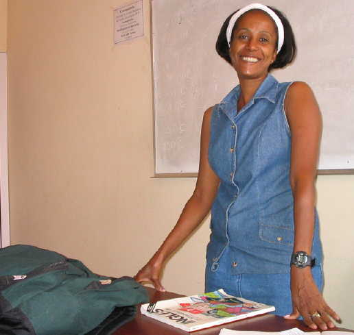

Cuba
Judaica
Five
pages of photographs with personal comments
|
Photos
4
|
(All photos copyrighted
by Richard Smith. No commercial or other use without permission
except by subjects of the photos and their families.)
Dr. Rosa Behar (front, left) and her volunteer crew run the Patronato pharmacy,
which distributes donated medicine throughout Cuba to hospitals and the general
population.

Mercedes teaches English to the young people at the Patronato.
One late evening Luis took me on a walking tour of Habana Vieja, and we visited
many of
the shops which once had Jewish owners. This, the only kosher butcher shop
in Cuba,
is still in operation. Other places we visited were former retail stores and
restaurants.
David Prinstein stands before a plaque commemorating those who helped build
the original synagogue.
A visitor from Miami looked at this and said, "Oh, that's our congregation."
|
Photos
4
|